NO. 01
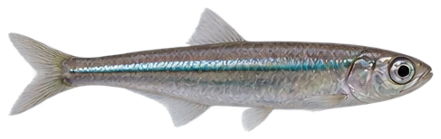
은줄멸치
게임 기준 길이 12cm은색 몸통 한가운데 바늘처럼 가는 청록색 줄이 뻗는다.
FIELD GUIDE / VOL. 01
공식 어종 27종을 희귀도별로 만나보세요. 표준 길이는 같은 어종 안에서 포획 크기와 S~D 등급을 정하는 기준입니다.
연안에서 만나는 열 가지 표정

은색 몸통 한가운데 바늘처럼 가는 청록색 줄이 뻗는다.
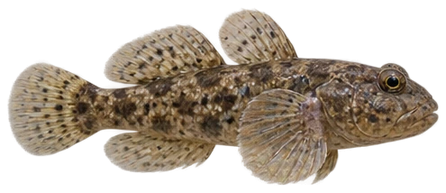
넓적한 머리와 두툼한 가슴지느러미 위로 자갈색 반점이 흩어져 있다.
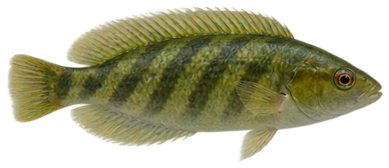
긴 등지느러미 아래로 짙은 해초색 띠가 비스듬히 흐른다.
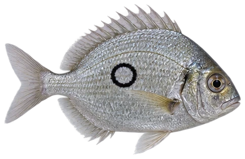
납작하고 둥근 은빛 옆구리에 검은 고리 하나가 찍혀 있다.
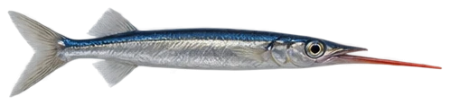
길게 튀어나온 아래턱 끝이 주홍빛이고 몸은 은빛 바늘처럼 가늘다.
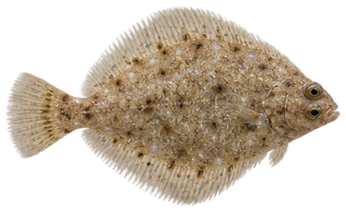
마름모꼴 몸 한쪽에 두 눈이 모여 있고 잔점이 모래알처럼 박혀 있다.
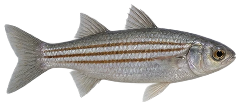
납작한 이마 뒤로 구리빛 가로줄 세 개가 꼬리까지 이어진다.
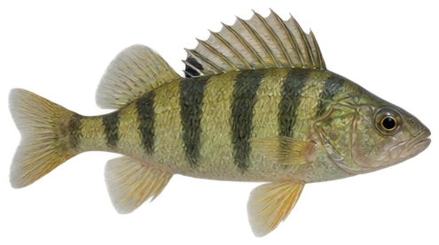
솟은 등가시 아래 연둣빛 옆구리를 어두운 세로줄이 가른다.
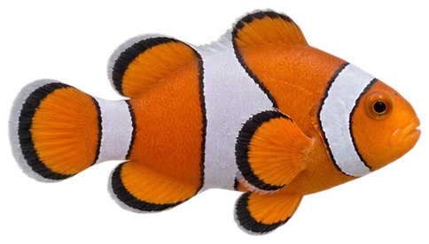
귤빛 몸을 흰 띠 세 개가 감싸고 둥근 지느러미 끝은 먹빛이다.
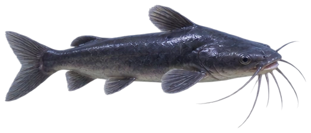
납작한 머리에서 긴 수염이 뻗고 매끈한 남빛 등이 꼬리로 굽는다.
지느러미와 몸의 형태가 독특한 여덟 종
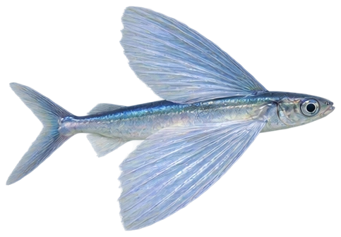
반투명한 하늘빛 가슴지느러미가 두 겹 날개처럼 펼쳐진다.
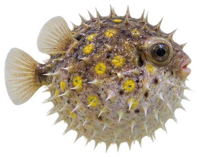
둥글게 부푼 배의 작은 가시 사이로 노란 달점이 떠 있다.
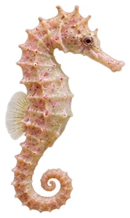
복숭앗빛 왕관돌기와 말린 꼬리 사이로 가는 마디가 이어진다.
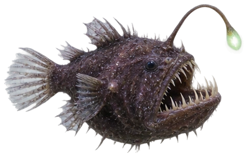
먹자색 머리 앞에 연두색 발광구가 매달리고 아랫턱에서 흰 이빨이 솟는다.
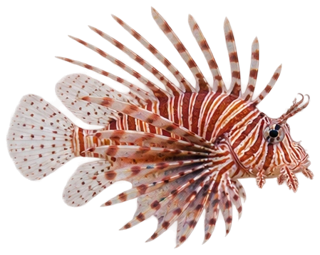
부채처럼 벌어진 가시와 긴 가슴지느러미에 적갈색 줄무늬가 번진다.
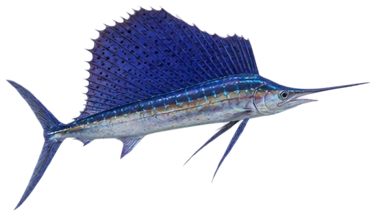
긴 창 모양 주둥이 뒤에 점박이 남청색 돛지느러미가 솟는다.
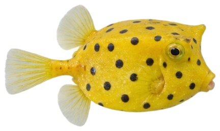
각진 레몬빛 몸통에 검은 점이 박혀 있고 뒤에는 작은 꼬리가 달린다.
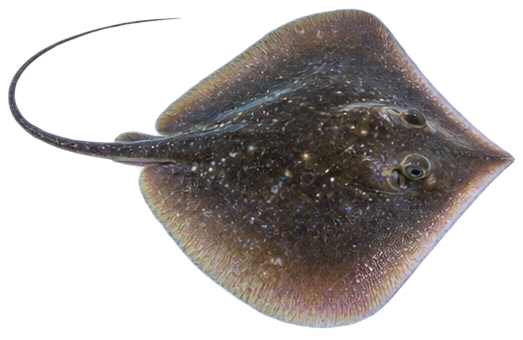
넓적한 날개에 자개색 테두리가 돌고 가는 꼬리가 채찍처럼 휜다.
빛과 광물의 질감을 지닌 다섯 종
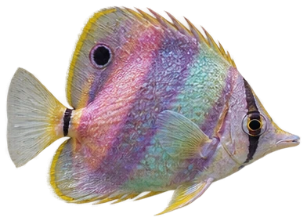
삼각형 옆구리를 사선으로 지나는 분홍·보라·민트빛 면이 프리즘을 이룬다.
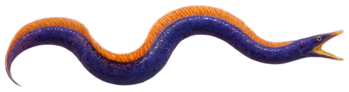
가늘게 굽이치는 남보라색 몸 위에 혜성 같은 주황색 등 리본이 흐른다.
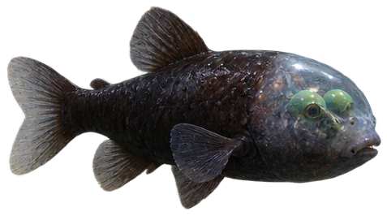
투명한 머리 속에 위를 향한 두 초록색 관 모양 눈이 비친다.
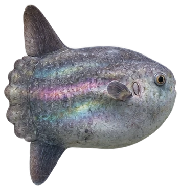
보름달 같은 몸 위아래에 긴 지느러미가 나 있고 옆면에 세 줄 오로라가 번진다.
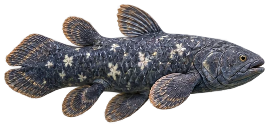
둥근 살지느러미마다 청동빛 고리가 돌고 세 갈래 꼬리 가운데에 작은 돌기가 있다.
금속과 얼음의 색을 두른 세 종
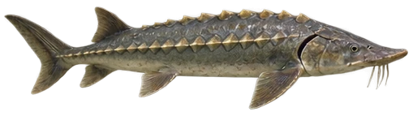
금빛 골판이 왕관처럼 이어지고 긴 주둥이 아래에 수염이 달린다.
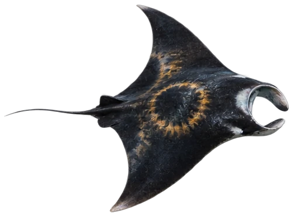
활처럼 벌어진 검은 날개에 금환 무늬가 있고 머리 양옆에 뿔지느러미가 말려 있다.
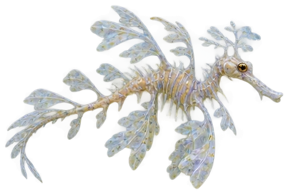
얼음 결정 같은 뿔과 투명한 잎지느러미가 청백색 몸을 따라 자란다.
별무리가 흐르는 바다의 거인
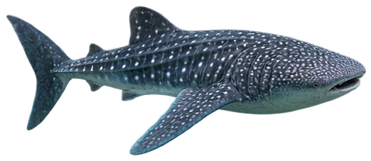
넓적한 머리와 초승달 꼬리 사이로 은하수 같은 별무늬가 흐르고 긴 가슴지느러미가 극광처럼 빛난다.